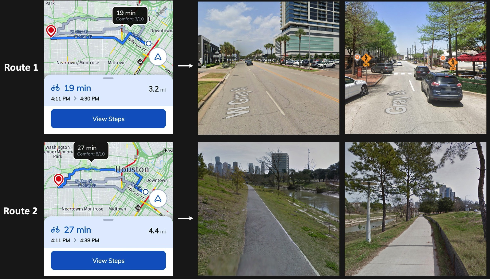

Cycling Routing Engine 🚴
The cycling routing engine was developed for the greater Houston area. Users can pick and navigate through routes between an origin and a destination, of varying comfort level, which we defined by the road type, the view along the road, the altitude changes, etc. This bike-friendly product suits cyclists' need in traveling with different trip purposes, recreation or commute, or just cycle to chill a bit. This cycling routing engine has been integrated into the app ConnectSmart, which is sponsored by Texas Department of Transportation (TxDOT) as deliverables in ConnectSmart project.

Try our cycling routing engine in our ConnectSmart app (Android/ IOS).

- Route 1: along the streets, sharing space with vehicles, but with less travel time
- Route 2: along the bayou, having better view and high safety, but with more travel time
Thanks to my Metropia colleagues for their great efforts in putting the multimodal trip planners onto the website and into the app.